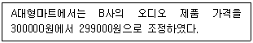
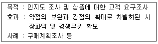
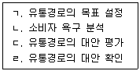
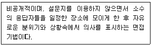
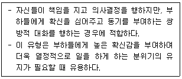
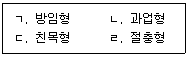
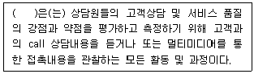

텔레마케팅관리사 (2020-06-06 기출문제)
1과목: 판매관리
1. 다음 중 인바운드 고객상담의 설명으로 옳은 것은?
- 인바운드 고객상담은 고객밀착형이다.
- 세일즈나 세일즈 리드(Sales leads)를 창출할 수 있다.
- 인바운드 고객상담은 주로 질문형의 문의상담 기능이 강하다.
- 고객에게 오는 전화이니 만큼 대기시간은 줄이는 것이 중요하다.
(정답률: 70%)

2. 아웃바운드 텔레마케팅의 전략적 활용방안 중 판매촉진의 방법으로 볼 수 있는 것은?
- 소비동향 조사
- 수요예측 조사
- 대금, 미수금 독촉
- 신상품 정보제공 및 구입 권유
(정답률: 72%)
3. 포지셔닝 전략의 수립과정에서 가장 먼저 수행하는 시장분석을 통해 얻을 수 있는 정보가 아닌 것은?
- 현재와 미래의 시장내의 경쟁구조
- 시장내 수요의 전반적인 수준 및 추세
- 세분시장의 크기와 잠재력
- 시장내 소비자의 지리적 분포
(정답률: 62%)
4. 마케팅 정보시스템의 특성이 아닌 것은?
- 경영정보시스템의 상위 시스템이다.
- 마케팅 경영자의 마케팅 의사결정에 사용할 수 있도록 한 시스템이다.
- 기업 내·외부자료를 체계적으로 관리한다.
- 정성적 데이터와 정량적 데이터로 구분하여 관리하다.
(정답률: 71%)
5. 다음은 어떤 가격조정전략에 해당하는가?

- 세분화 가격결정
- 심리적 가격결정
- 촉진적 가격결정
- 지리적 가격결정
(정답률: 78%)
6. 다음 중 인바운드 텔레마케팅의 활용 사례에 대한 설명으로 옳지 않은 것은?
- 최근 080 서비스가 많이 있는데 이는 '발신자부담서비스' 이다.
- 인바운드 텔레마케팅은 고객 상담 업무에 사용되기도 한다.
- 홈쇼핑에서도 인바운드 텔레마케팅이 많이 활용된다.
- 인바운드 텔레마케팅을 통해 고객의 다양한 욕구도 접수된다.
(정답률: 79%)
7. 다음은 아웃바운드 텔레마케팅의 활용 사례 중 무엇에 관한 설명인가?

- 고객정보 정비 및 확장
- Membersip Marketing
- Lead Qualification
- 시장조사
(정답률: 79%)
8. 시장세분화의 장점이 아닌 것은?
- 시장기회의 탐지가 가능하다.
- 보다 명확한 시장목표설정이 가능하다.
- 대량생산에 의한 규모의 이익을 향유할 수 있다.
- 시장의 구매동기, 소비자 욕구 등을 정확하게 파악할 수 있다.
(정답률: 80%)
9. 소비자가 제품 또는 서비스의 공급자를 변경할 때 발생하는 전환비용에 관한 설명으로 틀린 것은?
- 탐색비용 : 병원의 초진료와 같이 서비스 개시를 위해 지출하는 비용
- 학습비용 : 새로운 시스템에 적응하는데 드는 비용
- 감정비용 : 공급자와의 장기적 관계가 끊어질 때 경험하는 감정적인 혼란
- 인지적 비용 : 공급자를 바꿀 것인지의 여부를 생각하는 것과 관련된 비용
(정답률: 51%)
10. 단일 브랜드에 대한 호의적인 태도와 지속적인 구매를 보이는 소비자의 행동을 의미하는 것은?
- 브랜드 차별(brand discrimination)
- 행위적 학습(behavioral learning)
- 선별적 인식(selective perception)
- 브랜드 충성도(brand loyalty)
(정답률: 84%)
11. 제조업자가 중간상들로 하여금 제품을 최종사용자에게 전달, 촉진, 판매하도록 권유하기 위해 자사의 판매원을 이용하는 유통경로전략은?
- 푸쉬(push)전략
- 풀(pull)전략
- 집중적 경로전략
- 전속적 경로전략
(정답률: 58%)
12. 스키밍(skimming) 가격의 고려사항 중 관련성이 적은 것은?
- 한계원가
- 경쟁품의 가격
- 시장수요
- 구매자의 지불능력
(정답률: 42%)
13. 효율적인 인바운드 고객응대를 위해서 실시할 수 있는 방법이 아닌 것은?
- 콜센터(call center)의 설치운영
- 일률적인 성과급제
- 고객대응창구의 일원화
- 24시간 전화접수 체제 구축
(정답률: 58%)
14. 가격결정에 영향을 미치는 요인 중 내부적 요인에 해당하지 않는 것은?
- 마케팅 목표
- 목표시장 점유율
- 마케팅믹스 전략
- 경쟁사 가격
(정답률: 74%)
15. 텔레마케팅에 대한 설명으로 옳지 않은 것은?
- 고객을 일일이 방문하는 것은 비용이 많이 소요되므로 통신매체를 이용해서 판매하는 것이다.
- 바쁜 고객에게는 전화에 의한 구매가 더 편리할 때가 있다.
- 고객의 불만 사항을 전화로 접수하고 이를 시정하는 것도 텔레마케팅이다.
- 텔레마케팅은 개인고객에게만 가능하고 기업고객에게는 성립하지 않는다.
(정답률: 86%)
16. 텔레마케팅 시장현황의 거시적 환경 중 금융, 보험, 여행, 레저 등 서비스산업의 발달로 소득 증가에 따른 지출내용이 다양화되는 환경은?
- 인구 통계적 환경
- 경제적 환경
- 기술적 환경
- 사회문화적 환경
(정답률: 48%)
17. 시장세분화의 기준에 해당하지 않는 것은?
- 지리적 변수
- 인구통계학적 변수
- 유효타당성 변수
- 심리형태별 변수
(정답률: 51%)
18. 특정 기업이 자사 제품을 경쟁제품과 비교하여 유리하고 독특한 위치를 차지하도록 하는 마케팅 전략은?
- 관계마케팅
- 표적시장 선정
- 일대일 마케팅
- 포지셔닝
(정답률: 73%)
19. 드라마 상에 특정한 상품을 노출시켜 광고효과를 도모하는 기법은?
- POP
- USP
- PPL
- POS
(정답률: 82%)
20. 세분시장의 평가에 대한 설명으로 틀린 것은?
- 세분시장이 기업의 목표와 일치한다면 그 세분시장에서 성공하는데 필요한 기술과 자원을 보유한 것으로 본다.
- 세분시장을 평가하기 위하여 가장 먼저 각각의 세분시장의 매출액, 성장률 그리고 기대수익률을 조사하여야 한다.
- 세분시장 내에 강력하고 공격적인 경쟁사가 다수 포진하고 있다면 그 세분시장의 매력성은 크게 떨어진다.
- 세분시장 내에 다양한 대체 상품이 존재하는 경우에는 당해 상품의 가격이나 이익에도 많은 영향을 미친다.
(정답률: 58%)
21. 제품이용도를 제고하고자 이탈고객을 대상으로 거래단절의 원인을 조사하여 이에 대한 대책을 수립하는 마케팅 전략은?
- 관계마케팅(Relationship marketing)
- 유지마케팅(Retention marketing)
- 내부마케팅(Internal marketing)
- 데이터베이스마케팅(Database marketing)
(정답률: 50%)
22. 제약회사 등에서 많이 사용하는 상표전략으로 각 제품마다 다른 상표를 적용하는 전략은?
- 가족상표
- 상표확장
- 복수상표
- 개별상표
(정답률: 67%)
23. 포지셔닝 전략을 개발하기 위한 경쟁사 및 경쟁제품의 분석 정보에 해당되는 것은?
- 성장률
- 인적자원
- 시장점유율
- 기술상의 노하우
(정답률: 59%)
24. 다음 중 유통경로 설계절차가 바른 것은?

- ㄱ→ㄴ→ㄷ→ㄹ
- ㄱ→ㄴ→ㄹ→ㄷ
- ㄴ→ㄱ→ㄹ→ㄷ
- ㄴ→ㄱ→ㄷ→ㄹ
(정답률: 52%)
25. 마케팅의 내부 정보로 가장 거리가 먼 것은?
- 매입·매출 금액
- 판매상황 정보
- 수요예측 시장 정보
- 외상매출금
(정답률: 57%)
2과목: 시장조사
26. 확률표본추출법에 해당하지 않는 것은?
- 편의표본추출
- 단순무작위표본추출
- 층화표본추출
- 군집표본추출
(정답률: 51%)
27. 사회조사의 유형에 관한 설명으로 옳은 것은?
- 횡단조사는 탐색, 기술, 설명의 목적을 갖는다.
- 종단조사는 장기간에 걸쳐 조사하는 연구로 질적연구로는 이루어지지 않는다.
- 패널조사는 새로운 경향을 확이하기 위해 해마다 다른 표본을 선정한다.
- 추이조사는 패널조사보다 개인의 변화에 대해 더 명확한 자료를 제공한다.
(정답률: 34%)
28. 설문결과를 코딩지에 기록할 때 유의사항이 아닌 것은?
- 한 칸에는 단지 하나의 숫자가 기록되어야 한다.
- 응답의 세분화된 수를 고려하여 항목별 칸의 수를 결정하여야 한다.
- 항목을 분석 가능한 숫자로 표현한다.
- 취득하지 못한 자료를 처리할 경우에는 A, B와 같은 알파벳을 이용하여 구분을 명확하게 한다.
(정답률: 50%)
29. 개방형질문의 장점에 해당하지 않는 것은?
- 응답자로 하여금 그가 원하는 방향으로 자세히 응답하게 함으로써 창의적인 자기표현의 기회를 줄 수 있다.
- 질문지에 열거하기에는 응답 범주가 너무 많은 경우에 사용하면 좋다.
- 몇 개의 범주로 압축할 수 없을 정도로 쟁점이 복합적일 때 적합하다.
- 질문에 대한 대답이 표준화되어 있기 때문에 비교가 가능하다.
(정답률: 68%)
30. 응답 기업의 연간 매출액을 '원'단위로 조사하고자 하는 경우에 적합한 척도는?
- 명목척도
- 등간척도
- 비율척도
- 서열척도
(정답률: 43%)
31. 일반적으로 인과조사에 가장 적절한 조사방법은?
- 관찰조사
- 전화조사
- 설문조사
- 실험조사
(정답률: 55%)
32. 인과관계를 규명하는 모형에 포함된 변수에 해당하지 않는 것은?
- 독립변수
- 종속변수
- 대체변수
- 매개변수
(정답률: 37%)
33. 시장조사를 통해 수집된 자료의 처리 순서를 바르게 나열한 것은?
- 편집(editiong) → 입력(key-in) → 코딩(coding)
- 코딩(coding) → 편집(editiong) → 입력(key-in)
- 편집(editiong) → 코딩(coding) → 입력(key-in)
- 입력(key-in) → 코딩(coding) → 편집(editiong)
(정답률: 46%)
34. 설문지 초안이 완성된 후 본조사가 실행되기 전에 실시하는 조사는?
- 표본조사
- 기초조사
- 사전조사
- 모의조사
(정답률: 69%)
35. 설문조사 시 별도로 코딩을 하지 않아도 되기 때문에 시간을 절약할 수 있는 조사는?
- 인터넷조사
- 우편조사
- 전화조사
- 방문조사
(정답률: 59%)
36. 다음에서 설명하는 면접기법은?

- 표준화면접법(Standardized interview)
- 전화면접법(telephone interview)
- 개별방문면접법(face to face interview)
- 표적집단면접법(focus group interview)
(정답률: 72%)
37. 1차자료에 대한 설명 중 틀린 것은?
- 문제해결을 위해 조사자가 직접 수집하는 자료이다.
- 1차자료의 수집에는 많은 시간과 비용이 소요되며, 조사방법에 관한 지식과 기술도 필요하다.
- 조사자가 1차자료를 수집하고자 할 때는 조사설계와 자료수집 계획을 수립하여 직접 자료를 수집해야 한다.
- 이미 존재하는 자료로서 다른 조사자에 의해 수집된 공개자료를 말한다.
(정답률: 68%)
38. 측정오차의 발생원인과 가장 거리가 먼 것은?
- 통계분석기법
- 측정시점의 환경요인
- 측정방법 자체의 문제
- 측정시점에 따른 측정대상자의 변화
(정답률: 56%)
39. 조사방법 중 탐색조사에 해당하지 않는 것은?
- 문헌조사
- 패널조사
- 전문가 의견조사
- 사례조사
(정답률: 50%)
40. 응답자의 권리 보호와 거리가 먼 것은?
- 응답자의 개인정보를 상품판매에 이용해서는 안된다.
- 응답자의 개인정보를 조사의뢰 회사에 누설해서는 안된다.
- 응답자의 개인정보는 보호되어야 한다.
- 응답자의 개인정보를 임의로 활용하여 재조사를 요구할 수 있다.
(정답률: 75%)
41. 표본크기에 관한 설명으로 옳지 않은 것은?
- 모집단의 구성요소가 이질적인 경우 동질적인 경우에 비해 표본크기가 커야 한다.
- 표본크기가 클수록 표본오차는 증가한다.
- 표본추출방법이 표본크기 결정에 영향을 미친다.
- 요구되는 신뢰수준이 높을수록 표본크기는 커야 한다.
(정답률: 44%)
42. 마케팅 조사 시 조사자가 지켜야 할 사항과 가장 거리가 먼 것은?
- 조사자의 능력이 부족할 경우 다른 전문기관에게 수행시킬 수 있다.
- 연구조사를 수행하는 과정에서 본 조사에 영향을 미칠 수 있는 기증, 사례, 계약 등은 자제한다.
- 연구조사를 수행하는 과정에서 조사의 방향이나 내용에 영향을 미칠 수 있는 연구업무의 수행은 자제해야 한다.
- 자료를 제공해준 응답자의 자료가 심각한 사적 침해를 하지 않는다고 개인적으로 판단되는 경우 재정적 지원 기관에게 공개할 수 있다.
(정답률: 71%)
43. 텔레마케터가 사전조사 시 응답자의 개방적 질문의 응답을 기록할 때 적절하지 않은 것은?
- 응답자가 사용한 어휘를 그대로 적는다.
- 나중에 받아 적는 것이 아니라 전화조사 진행 중에 응답을 기록한다.
- 응답자의 응답을 요약하거나 의역하고 때로 부연 설명하여 기록한다.
- 응답자에게 추가 질문한 것이나 캐묻기와 코멘트도 같이 기록하는 것이 효과적이다.
(정답률: 60%)
44. 마케팅조사자가 회사 내의 다른 부서에서 작성한 리포트, 재무보고서, 서베이 자료 등을 활용한다면, 이 조사자는 다음 중 어떤 것을 이용한 것인가?
- 내부 1차 자료
- 내부 2차 자료
- 외부 1차 자료
- 외부 2차 자료
(정답률: 64%)
45. 시장조사 시 조사자가 지켜야 할 사항과 가장 거리가 먼 것은?
- 조사 대상자의 존엄성과 사적인 관리를 존중해야 한다.
- 조사결과는 성실하고 정확하게 보고하여야 한다.
- 자료의 신뢰성과 객관성을 확보하기 위해 자료원 보호는 반드시 배제해야 한다.
- 조사의 목적을 성실히 수행하여야 하며, 조사결과의 왜곡, 축소 등은 회피하여야 한다.
(정답률: 76%)
46. 우편조사의 설명으로 옳지 않은 것은?
- 대인조사법에 비해 조사방법이 간편하므로 응답률이 높다.
- 전화면접법에 비해 자료수집기간이 길다.
- 응답자의 시간적 제한 없이 여유 있게 응답할 수 있다.
- 응답자의 대표성에 문제가 있다면 신뢰성 있는 자료를 얻기가 어렵다.
(정답률: 68%)
47. 우편조사와 전화조사의 공통적인 장점이 아닌 것은?
- 시간을 절약할 수 있다.
- 경비를 절약할 수 있다.
- 사려 깊은 응답가능성이 높다.
- 직접 면접이 어려운 사람에게 이용할 수 있다.
(정답률: 55%)
48. 다음 중 내적타당도를 저해하는 요인이 아닌 것은?
- 특정사건의 영향
- 사전검사의 영향
- 조사대상자의 차별적 선정
- 반작용 효과(reactive effrcts)
(정답률: 47%)
49. 비확률표본추출법의 특징이 아닌 것은?
- 인위적 표본추출이다.
- 시간과 비용이 많이 든다.
- 표본오차 추정이 불가능하다.
- 표본분석 결과의 일반화에 제약이 있다.
(정답률: 44%)
50. 다음 중 질문의 표준화가 쉽게 이루어질 수 있고 비교적 비용이 저렴하며 신속하게 자료를 얻을 수 있는 조사방법은?
- 전화조사
- 개인면접법
- 심층면접법
- 우편조사
(정답률: 69%)
3과목: 텔레마케팅관리
51. 다음은 허시와 블랜차드의 상황이론 중 어떤 유형에 관한 설명인가?

- 지시형
- 코치형
- 후원형
- 위임형
(정답률: 44%)
52. 일반적인 텔레마케팅의 분류에 해당하지 않는 것은?
- 착·발신 주체에 따른 분류
- 대상에 따른 분류
- 고객 니즈에 따른 분류
- 운영방법에 따른 분류
(정답률: 39%)
53. 달성 가능성이 높은 목표를 세우기 위해 SMART기법을 사용한다. “SMART” 용어에 대한 표기가 잘못된 것은?
- S : Special
- M : Measurable
- A : Achievable
- T : Timely
(정답률: 52%)
54. 성공하는 텔레마케팅 조직의 특성으로 옳지 않은 것은?
- 공정한 성과평가 및 보상이 이루어진다.
- 직무별 목표와 책임이 분명하다.
- 인력개발을 위한 교육프로그램이 마련되어 있다.
- 생산성 향상을 위해 내부 커뮤니케이션은 최대한 제한되어 있다.
(정답률: 72%)
55. 관리격자 모형 중 리더쉽 유형에 해당하는 것을 모두 고른 것은?

- ㄱ, ㄴ
- ㄱ, ㄷ, ㄹ
- ㄴ, ㄷ, ㄹ
- ㄱ, ㄴ, ㄷ, ㄹ
(정답률: 40%)
56. 콜센터 조직이 갖추어야 할 조직의 특성과 가장 거리가 먼 것은?
- 엄격성
- 고객정보 활용
- 성과측정
- 고객정보 관리 능력
(정답률: 61%)
57. 인적자원계획의 과정이 아닌 것은?
- 인력예측
- 원가절감
- 목표설정 및 전략계획
- 프로그램 실행 및 평가
(정답률: 65%)
58. 직무분석(Job analysis) 결과 작성되는 직무기술서에 포함되는 내용으로 가장 거리가 먼 것은?
- 직무의 요건
- 직무와 직무의 비교
- 직무의 내용
- 직무의 개요
(정답률: 58%)
59. 텔레마케팅의 구성요소에 해당하지 않는 것은?
- 스크립트
- 데이터베이스
- 텔레마케팅 운용요원
- 헤드세트
(정답률: 65%)
60. 콜센터의 성과향상을 위한 보상계획을 수립할 때 고려해야 할 사항으로 가장 거리가 먼 것은?
- 지속적이고 일관성 있는 보상계획을 수립해야 한다.
- 달성 가능한 목표 수준을 고려해야 한다.
- 계획수립 과정에 직원을 참여시켜야 한다.
- 팀보다 개인의 성과에 초점을 맞추어야 한다.
(정답률: 65%)
61. 인바운드 콜센터의 운영 성과측정지표에 관한 설명으로 옳지 않은 것은?
- 품질평가는 “목표 서비스 기간 내에 총 인입된 콜의 몇 %를 응답했는가?”를 측정하는 항목이다.
- CPH(Call Per Hour)는 “텔레마케터가 시간당 인입콜을 얼마나 많이 처리하였는가?”를 측정하는 항목이다.
- 스케쥴 고수율은 (콜 처리시간 + 콜 처리 준비가 되어 있는 시간)/업무를 하도록 스케쥴된 시간을 측정하는 항목이다.
- 고객 만족도는 고객이 콜센터에 대해 느끼는 만족도를 측정하는 항목이다.
(정답률: 55%)
62. 다음 중 고객 상황의 설명으로 틀린 것은?
- 고객 상황이란 고객이 지니고 있는 가치, 신념, 니즈, 행동과 관련한 상황을 말한다.
- 고객의 니즈는 고객의 요구상황과 욕구상황으로 이루어진다.
- 고객의 욕구상황은 고객입장에서 객관적인 관점이나 행동을 요청하는 것을 말한다.
- 고객 상황은 생성주체, 우호성 정도, 고객 가치평가, 소속 개체에 따라 분류한다.
(정답률: 49%)
63. 텔레마케팅의 종류 중 그 분류기준에 따라 잘못 짝지어진 것은?
- 인바운드 텔레마케팅 – 아웃바운드 텔레마케팅
- 인하우스 텔레마케팅 – 에이전시 텔레마케팅
- B to B 텔레마케팅 – B to C 텔레마케팅
- 인하우스 텔레마케팅 – 아웃하우스 텔레마케팅
(정답률: 46%)
64. 콜센터 BSC 성과관리 관점과 그 항목의 연결이 틀린 것은?
- 재무적 관점 : 원가 및 비용절감
- 고객관점 : 생산성 향상
- 내부 프로세스 관점 : 조직구성 및 채널의 다양성
- 성장과 학습관점 : 커뮤니케이션
(정답률: 58%)
65. 인적자원개발을 위한 교육훈련 절차로 옳은 것은?
- 목표설정→직무분석→교육시행→성과평가→보상과 개선
- 목표설정→교육시행→직무분석→성과평가→보상과 개선
- 직무분석→목표설정→성과평가→교육시행→보상과 개선
- 직무분석→목표설정→교육시행→성과평가→보상과 개선
(정답률: 46%)
66. 다음 중 우수한 리더의 특성으로 옳지 않은 것은?
- 솔직하고 즉각적인 감정표현
- 상호역할에 대한 이해
- 팀원 행동에 대한 이해
- 성과에 대한 공정한 평가
(정답률: 71%)
67. 콜센터 조직 특성으로 적합하지 않은 것은?
- 현재 비정규직 중심으로 근무형태가 주종을 이루고 있으며, 타 직종에 비하여 이직률이 높은 편이다.
- 정규직과 비정규직간 혹은 상담원간에 보이지 않는 커뮤니케이션 장벽 등이 발생할 확률이 높다.
- 국내의 콜센터 조직은 점차 대형화, 전문화, 시스템화 되어가는 추세이다.
- 콜센터 조직의 가장 큰 특징은 다른 어떤 직종보다 인력의 전문성을 크게 요구하지 않는다는 것이다.
(정답률: 64%)
68. 콜센터 리더의 역할로 옳지 않은 것은?
- 대행자
- 정보제공자
- 정보수집자
- 동기부여자
(정답률: 57%)
69. 다음 직무 스트레스 중 역할갈등의 예에 해당되는 것은?
- 상담원 A는 인터넷을 사용할 줄 모르는데 전자우편 상담 업무를 하도록 지시받았다.
- 상담원 A의 상사는 업무 이외의 요소, 예를 들면 복장 등에 대한 지적이 잦다.
- 상담원 A가 맡은 업무는 야근이 많고 수시로 근무시간이 바뀌는 업무이다.
- 상담원 A는 동료들과 어울리지 못하여 업무 외 활동에 자주 소외된다.
(정답률: 58%)
70. 다음 ( )에 알맞은 용어는?

- 코칭
- 스크립트
- 벤치마킹
- QA(Quality Assurance)활동
(정답률: 60%)
71. 직무평가방법 중 가장 간단하고 사용하기 쉬운 방법으로 평가요소를 기준으로 직무의 가치를 비교하여 평가된 가치의 순서대로 서열을 정하고 이에 따라 임금을 정하는 방법은?
- 요소비교법
- 점수법
- 서열법
- 분류법
(정답률: 61%)
72. 다음 중 경력관리에 대한 설명으로 틀린 것은?
- 적재적소 배치 및 후진양성에 필요하다.
- 능력주의와 연공주의를 절충한다.
- 장기계획이다.
- 조직의 목표와 개인의 목표를 일치시킨다.
(정답률: 47%)
73. 의사결정 권한을 기준으로 조직의 인적자원 스태프와 일선관리자 간의 권한관계를 분류할 때 그 유형이 아닌 것은?
- 기능적 권한관계
- 상담관계
- 지시관계
- 조언관계
(정답률: 38%)
74. 콜센터에 대한 인식 변화에 관한 설명으로 틀린 것은?
- 마케팅 수단에서 고객불만의 접수창구로의 변화
- 수익성 중심에서 고객과의 관계 중심으로 변화
- 거래보조 수단에서 세일즈 수단으로 변화
- 고객서비스 수단에서 고객의견조사의 수단으로 변화
(정답률: 49%)
75. 상담원들의 이직관리에 대한 사항으로 틀린 것은?
- 상담원에게 콜센터의 비전을 제시하고 동기를 부여한다.
- 상담원을 제외한 관리자와 스텝의 말만 충분히 고려한다.
- 행복한 일터, 즐겁게 일하는 콜센터 분위기를 조성한다.
- 이직의 원인을 지속적으로 모니터링하고 개선한다.
(정답률: 73%)
4과목: 고객응대
76. 올바른 상담태도로 알맞은 것은?
- 상담 시 시청각자료는 쓰지 않는다.
- 고객의 의견을 진지하게 경청하도록 한다.
- 텔레마케터의 권위를 높이기 위해 전문적인 용어를 쓴다.
- 텔레마케터는 전문가이므로 자신의 의견을 일방적으로 설득시키는 것이 좋다.
(정답률: 55%)
77. MOT(Moments of truth)와 관계없는 것은?
- 스위스 항공사의 사장 한셀이 주창
- 기업의 생존이 결정되는 순간
- 고객과 기업이 접촉하여 그 제공된 서비스에 대해 느낌을 갖는 15초 간의 진실의 순간
- 우리 회사를 선택한 것이 가장 현명한 선택이었다는 사실을 고객에게 입증시켜야 할 소중한 시간
(정답률: 40%)
78. 빅 데이터의 특징이 아닌 것은?
- 방대한 규모(Volume)
- 종류의 다양성(Variety)
- 데이터 처리 및 분석의 속도(Velovcity)
- 데이터의 미덕(Virtue)
(정답률: 64%)
79. 커뮤니케이션의 기본요소에 대한 설명으로 옳지 않은 것은?
- 발신자(Communicator) : 상대방에게 사상, 감정, 정보 등을 전달하고자 하는 사람을 말한다.
- 부호화(Encoding) : 사상, 감정, 정보 등을 전달하고자 하는 것을 언어, 몸짓, 기호로 표현한 것을 말한다.
- 메시지(message) : 기호화의 결과로 나타난 것이며, 언어적인 것과 비언어적인 것으로 구분된다.
- 해독(Decoding) : 메시지를 받고 나서 어떤 반응을 보일 뿐만 아니라, 자신의 반응 일부를 전달자에게 다시 보내는 과정을 말한다.
(정답률: 56%)
80. 상담 화법에 대한 설명으로 바람직하지 않은 것은?
- 아이 메시지(I-Message)는 대화 시 상대방에게 내 입장을 설명하는 화법
- 유 메시지(You-Message)는 대화 시 결과에 대해 상대방에게 핑계를 돌리는 화법
- 두 메시지(Do-Message)는 어떤 잘못된 행동 결과에 대해 그 사람의 행동과정을 잘 조사하여 설명하고 잘못에 대하여 스스로 반성을 구하는 화법
- 비 메시지(Be-Massage)는 잘못에 대한 결과를 서로 의논하여 합의점을 찾는 화법
(정답률: 34%)
81. 호기심 많은 행동스타일의 소비자상담 전략 중 틀린 것은?
- 감정에 호소하는 의사소통기법을 사용한다.
- 제품에 관련된 고객의 배경이나 경험에 대해 구체적인 개방형 질문을 해야 한다.
- 고객의 결정을 강요하지 말고 계약을 할 때까지 계속 설득해야 한다.
- 미리 세부사항과 정보가 준비되도록 하고 그들과 철저히 친숙하여야 한다.
(정답률: 60%)
82. 대인커뮤니케이션의 방향에서 미디어 이용의 진행 방향으로 옳은 것은?
- 욕구→동기→미디어선택→충족
- 동기→욕구→미디어선택→충족
- 욕구→미디어선택→동기→충족
- 미디어선택→동기→욕구→충족
(정답률: 39%)
83. 특정 고객의 주관적인 욕구 사항에 대한 응대 요령으로 옳은 것은?
- 수용 가능한지 아닌지 신중하게 판단하여 가능한 빠른 시간에 답을 주도록 한다.
- 고객이 원하는 것이므로 모든 내용을 수용하는 것이 원칙이다.
- 요구를 받아들이기 어려운 상황에서는 거절에 대한 이유를 일일이 설명할 필요가 없다.
- 무리한 요구를 하는 고객에게는 친절하게 응대하지 않아도 된다.
(정답률: 62%)
84. CRM이 등장하게 된 원인과 거리가 먼 것은?
- 업체 간 과다경쟁
- 고객욕구의 다양화
- 고객데이터축적의 어려움
- 라이프스타일의 다양화
(정답률: 46%)
85. 고객응대 시 효과적인 경청(listening) 방법으로 볼 수 없는 것은?
- 반대의견을 제시하고 조목조목 따진다.
- 고객과의 공통 관심 영역을 갖는다.
- 고객의 대화상 실수를 너그럽게 이해한다.
- 고객에게 적극적인 호응을 한다.
(정답률: 69%)
86. 고객유형별 응대 포인트로 옳은 것은?
- 신중형 : 잘 경청하고 당당하게 대하며, 너무 조르거나 스트레스를 주지 않는다.
- 변덕형 : 말씨나 태도를 공손히 하며, 동작이나 설명을 천천히 하며 기다리게 한다.
- 우유부단형 : 논리 정연하게 설명하며, 요점을 간결하게 근거를 명확히 한다.
- 이론형 : 세일즈 포인트를 비교하여 설득하며, “이것이 좋습니다”라고 조언한다.
(정답률: 36%)
87. 감정노동에 관한 설명으로 틀린 것은?
- 감정노동이란 말투나 표정 등 드러나는 감정 표현을 직무의 한 부분으로 연기하기 위해 자신의 감정을 억누르고 통제하는 일이 수반되는 노동을 의미한다.
- 주로 고객 등을 직접 대면하거나 음성대화매체 등을 통하여 상대하면서 상품을 판매하거나 서비스를 제공하는 고객응대업무 과정에서 발생한다.
- 최근에는 공공서비스나 민원처리 업무까지 광범위하고 다양한 직업군에서 수행하고 있다.
- 백화점·마트의 판매원, 호텔직원 등은 간접대면 직업군으로 분류된다.
(정답률: 63%)
88. 분석 CRM의 본질적인 역할을 수행하기 위해 고려해야 하는 요소가 아닌 것은?
- 데이터마트
- 데이터마이닝
- 데이터웨어하우스
- 데이터베이스마케팅
(정답률: 29%)
89. CRM에 관한 설명으로 틀린 것은?
- 고객과의 신뢰를 중시한다.
- 고객지향적 경영기법이다.
- 안정적이고 장기적인 수익을 창출한다.
- “Customer Rational Manager”의 약자이다.
(정답률: 57%)
90. 하둡(HADOOP)의 설명으로 틀린 것은?
- 대용량 데이터의 분산 저장 및 신속한 처리를 위해 다수의 컴퓨터를 네트워크로 연결하여 하나의 시스템과 같이 사용할 수 있도록 구성한 시스템이다.
- 신뢰할 수 있고, 확장이 용이하며, 분산 컴퓨터 환경을 지원하는 오픈 소스 소프트웨어이다.
- 분산 시스템에서 방대한 데이터를 처리할 수 있도록 고안된 오픈소스 데이터베이스 관리 시스템이다.
- 하둡 시스템은 마스터 노드와 슬레이브 노드들을 하나의 클러스터로 묶어 이루어져 있다.
(정답률: 23%)
91. 데이터 분석 결과를 쉽게 이행할 수 있도록 시각적으로 표혀하고 전달하는 과정은?
- 데이터 클러스터링
- 데이터 커스터마이징
- 데이터 시각화
- 데이터 분류
(정답률: 66%)
92. 홈페이지 개인정보 노출 방지대책으로 틀린 것은?
- 기관에서 운영 중인 홈페이지는 주기적으로 현황 조사를 실시하여 관리할 수 있도록 해야 한다.
- 로그인은 하지 않는 페이지더라도 소스코드, 파일, ULR에 개인정보 포함여부를 점검한다.
- 관리자 페이지는 기본적으로 외부에서 접근이 용이하도록 운영한다.
- 노출 발생 시 원인 분석 및 외부 유출여부 확인을 위해 웹서버 로그를 일정기간 동안 보관한다.
(정답률: 68%)
93. 인바운드 텔레커뮤니케이션의 심리적 장애요소가 아닌 것은?
- 피면접자에게 자신의 표정이 읽힐 가능성에 대한 두려움
- 자신의 상품에 대한 확신감 결여
- 똑같은 내용 반복에 대한 권태감
- 목소리 느낌만으로 상대방을 판단하려는 선입관
(정답률: 54%)
94. 우유부단한 고객에 대한 상담기술로 적합하지 않은 것은?
- 적극적으로 고객의 말을 들어주는 시간만을 가지는 것이 중요하다.
- 개방형 질문을 통하여 그들이 원하는 것이 무엇인지 적절히 표현할 수 있도록 도와준다.
- 적절한 아이디어를 제공해 줌으로써 고객이 의사결정 하는데 도움을 준다.
- 의사결정을 강화시킬 수 있는 다른 대안들을 설명해 주고, 적절한 보상기준도 설명하여 문제해결에 대한 신뢰를 가지도록 해준다.
(정답률: 56%)
95. 다음 중 고객유지의 필요성에 대한 설명으로 틀린 것은?
- 기존 고객을 잘 관리하는 것이 신규고객을 유치하는 것보다 효율적이다.
- 기존 고객의 유지를 통해 고객충성도를 증진시키고 고객점유율을 유지할 수 있다.
- 회사와의 지속적인 거래관계를 유도하여 매출액을 향상시킬 수 있다.
- 새로운 고객을 지속적으로 유치하여 단골고객화 할 수 있다.
(정답률: 57%)
96. CRM을 위한 캠페인 평가지표 중 조직의 캠페인 실행역량을 평가하는 지표로 옳은 것은?
- 캠페인 실행률
- 캠페인 접촉률
- 캠페인 반응률
- 캠페인 성공률
(정답률: 50%)
97. B2B(Business to Business) CRM의 설명으로 틀린 것은?
- 기업 대 기업의 판매는 본질적으로 기업이 아닌 실체적인 개별 인간과의 거래이므로 실체적 인간이 바라는 요구에 대응하는 것이 B2B CRM의 핵심이다.
- B2B 고객과의 관계 관리는 기업의 특성을 고려한 가치 있는 해법을 찾는 것이 과제이다.
- B2B 프로그램의 경우 기업과 소비자 모두를 대상으로 하기 때문에 개별 소비자 프로그램에 비해 범위가 넓다.
- B2B CRM은 B2C(Business to Consumer) CRM에 비해서 고려해야 할 범위가 일반적으로 좁다고 할 수 있다.
(정답률: 44%)
98. 전화 상담에서 필요한 말하기 기법에 관한 설명으로 틀린 것은?
- 전화로 이야기할 때에도 미소로 지으며, 중요한 단어를 강조하며 말한다.
- 억양에 변화를 주는 것은 소비자의 집중력을 약화시키므로 바람직하지 않다.
- 소비자가 말하는 속도에 보조를 맞추되, 상담원은 되도록 천천히 말하는 습관을 갖는 것이 좋다.
- 명확한 발음을 하기 위해 큰소리로 반복해서 연습하는 것이 필요하다.
(정답률: 62%)
99. 인바운드 상담 중 고객의 욕구를 파악하기 위한 방법으로 가장 거리가 먼 것은?
- 고객정보 활용
- 적극적 경청
- 이점 제안
- 효과적인 질문 활용
(정답률: 55%)
100. 불만족한 고객을 응대하기 위한 상담기법이라고 볼 수 없는 것은?
- 고객이 만족할 수 있는 최선의 대안을 제시한다.
- 공감하면서 경청한다.
- 충분히 배려한다.
- 제품에 대해 고객이 잘못 알고 있는 것을 전문용어를 사용하여 설명한다.
(정답률: 68%)